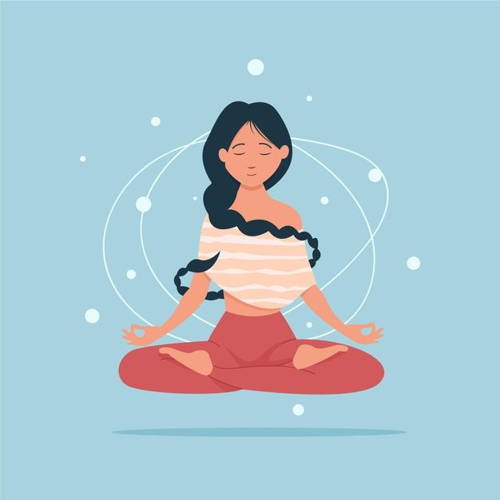

Home
Wat is meditatie?
Meditatie is een beoefening die zich richt op het cultiveren van bewustzijn, aandacht en innerlijke rust. Het draait om het trainen van de geest om in het huidige moment te zijn, zonder oordeel. Het biedt talloze voordelen voor zowel de geest als het lichaam, waaronder stressvermindering, verbeterde concentratie, emotionele balans en een dieper gevoel van welzijn.
Hoe mediteer je?
- Zoek een rustige plek:Zoek een rustige en comfortabele plek waar je niet gestoord zult worden. Het kan een speciale meditatiehoek in huis zijn of een rustige buitenruimte.
- Comfortabele houding:Zit comfortabel in een stoel, op een kussen op de grond of in de lotushouding. Zorg ervoor dat je rechtop zit, maar ontspannen, met je handen in je schoot of op je knieën.
- Focus op de ademhaling:Richt je aandacht op je ademhaling. Observeer de stroom van in- en uitademing zonder te proberen het te veranderen. Je kunt je ook concentreren op het gevoel van je ademhaling in je buik, borstkas of neusgaten.
- Laat gedachten voorbijgaan:Gedachten zullen opkomen; dit is normaal. Laat ze komen en gaan zonder erin meegezogen te worden. Keer steeds terug naar je ademhaling als je merkt dat je afgeleid bent.
Waarom moet je mediteren?
Er zijn verschillende redenen waarom mensen ervoor kiezen om te mediteren vanwege de vele potentiële voordelen die het kan bieden voor zowel de geest als het lichaam. Enkele van deze redenen zijn:
- Stressvermindering: Meditatie kan helpen bij het verminderen van stress door de geest tot rust te brengen en het vermogen te vergroten om met stressvolle situaties om te gaan.
- Verbeterde concentratie: Door regelmatig te mediteren, kan men de concentratie en focus vergroten, wat nuttig is in verschillende aspecten van het dagelijks leven, zoals werk, studie en het uitvoeren van taken.
- Emotionele balans: Het kan helpen bij het ontwikkelen van emotionele veerkracht en het vermogen om met emoties om te gaan, waardoor men meer in balans kan blijven tijdens uitdagende situaties.
- Verhoogd welzijn: Meditatie wordt geassocieerd met een verbeterd gevoel van welzijn, geluk en tevredenheid, omdat het kan helpen om de geest te kalmeren en innerlijke vrede te bevorderen.
- Verbeterde gezondheid: Hoewel meditatie geen vervanging is voor medische behandeling, hebben sommige onderzoeken aangetoond dat het beoefenen van meditatie gunstig kan zijn voor de algemene gezondheid. Het kan bijvoorbeeld de bloeddruk verlagen, de slaapkwaliteit verbeteren en het immuunsysteem versterken.
- Zelfbewustzijn en zelfreflectie: Meditatie kan helpen bij het ontwikkelen van een dieper begrip van jezelf, je gedachten en je reacties op verschillende situaties, wat kan leiden tot zelfinzicht en persoonlijke groei.
- Spirituele groei: Voor sommige mensen is meditatie een manier om spirituele verbondenheid te ervaren, meer bewustzijn te ontwikkelen over hun innerlijke zelf en een gevoel van verbondenheid met iets groters dan henzelf.
Begin jouw meditatiereis
Het belangrijkste is consistentie. Begin met een paar minuten per dag en verleng de duur naarmate je comfortabeler wordt. Het draait niet om perfectie, maar om de bereidheid om jezelf te observeren en te groeien. Verken verschillende technieken en ontdek wat het beste bij jou past. Onthoud dat meditatie een persoonlijke reis is, en er bestaat geen 'juiste' manier om te mediteren. Het gaat erom wat voor jou werkt en wat je innerlijke rust en welzijn bevordert. Start vandaag nog jouw meditatiepraktijk en ervaar de krachtige voordelen voor je geest, lichaam en ziel.